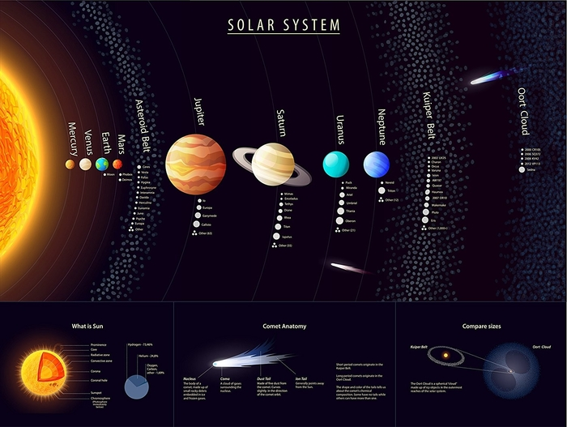

| News | Contact us | Gallery |
|---|
|
The Solar System[b] is the gravitationally bound system of the Sun and the objects that orbit it.
Of the bodies that orbit the Sun directly, the largest are the four gas and ice giants and the four
terrestrial planets, followed by an unknown number of dwarf planets and innumerable small Solar System
bodies. Of the bodies that orbit the Sun indirectly—the natural satellites—two are larger than Mercury,
the smallest terrestrial planet, and one is nearly as large.[c]
The Solar System formed 4.6 billion years ago from the gravitational collapse of a giant interstellar molecular cloud. The vast majority of the system's mass is in the Sun, with the majority of the remaining mass contained in Jupiter. The four inner system planets – Mercury, Venus, Earth and Mars – are terrestrial planets, being composed primarily of rock and metal. The four giant planets of the outer system are substantially more massive than the terrestrials. The two largest planets, Jupiter and Saturn, are gas giants, being composed mainly of hydrogen and helium; the next two, Uranus and Neptune, are ice giants, being composed mostly of substances with relatively high melting points compared with hydrogen and helium, called volatiles, such as water, ammonia and methane. All eight have nearly circular orbits that lie within a nearby flat disc called the ecliptic The Solar System also contains smaller objects.[d] The asteroid belt, which lies between the orbits of Mars and Jupiter, contains objects composed of rock, metal and ice. Beyond Neptune's orbit lie the Kuiper belt and scattered disc, which are populations of objects composed mostly of ice and rock, and beyond them lies a class of minor planets called detached objects. Such objects are categorized as dwarf planets. Identified dwarf planets include the asteroid Ceres and the transicluded comets,Centaurus and interplanetary dust clouds,freely travel between regions. Six of the planets at least four of the dwarf planets, and many of other small bodies are orbitet by natural satellite.Usually termed "moons" after the Moon. Each of the outer planets is encircled by planetary rings of dust and other small objects. |

|